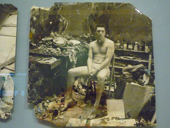

DUBLIN - You visit his studio for the first time. There are tubes of paint everywhere, papers scattered on the floor, a broken mirror, slashed canvases, paint on the walls. Then you see the paintings. At first you notice a figure messed up by a series of spots and deforming lines. You look more carefully. You notice that the overall image has something – a movement, a peculiar composition of colours given just by those articulated marks. You see a painting that tries to imitate a blurred photograph. You wonder: is it all a “game of chance”, as Bacon used to say?
Bacon always credited the role of chance, from his early paintings until his latest works. Head of Conservation, Joanna Shepard, and her team discovered in their analysis of Bacon's paintings this was not the case. In a lecture held at the Hugh Lane Gallery on Sunday 15th of November - one of the several meetings scheduled for the ongoing exhibition Francis Bacon: A terrible Beauty- she said that Bacon's relationship, or better, struggle with chance, significantly varied along his career. This is despite his numerous declarations about the total absence of premeditation in his paintings.
Bacon was a colourful character. He loved gambling, both in art and in life. He was equally famous for his paintings and personal life's anecdotes, which he delighted to narrate to his critics - creating a myth for himself. He set out to create a personal mystique, cultivating the enigma of techniques through a “flippant evasiveness and feigned ignorance when asked about his practice”, according to Shepard. While continuing to emphasize the role of chance in his work, he remained dismissive of attempts to investigate his painting methods. “Aged seventy-five, with a major retrospective exhibition about to open, he asserted that he knew nothing about technique and that it would be a waste of time for him to talk about it”, she said. The research confronted physical evidence and Bacon's own statements. Many studies have been carried out on his paintings' iconography, but very few have attempted to research Bacon's techniques in depth.
Bacon used interviews to construct his persona, cunningly making his critics and biographers believe that his paintings were the outcome of a process akin to alchemy, where the result was always unforeseen and unexpected. As Shepard remarked, he claimed to approach the canvas with some sketches and everything that happened from there actually happened by chance. Bacon once declared: “In a way it's purely by chance that something happens on the canvas...but while I'm painting, suddenly, out of the painting itself, in some way these forms and directions that I hadn't anticipated just appear. It is these that I call accidents.” Moreover, Bacon used to claim to be entirely self-taught. This is, to a certain extent, undoubtedly true. He declared that he was reduces to paint on the back of his canvases, because he was poor. However Shepard pointed out that he had two very close friends, Roy De Maistre and Graham Sutherland, who where frequently sources of advice and materials. Bacon never acknowledged their contribution. In a series of interviews with David Sylvester for example, he described the making process of Painting (1946) as “one continuous accident mounting on the top of another.”
The recent investigations carried out by Joanna Shepard and her team tell a completely different story, she stated. “He clearly acquired more and more awareness of his chosen materials over the years. Towards the end of his career he was completely conscious of his techniques. There is evidence everywhere.” They used over a hundred abandoned or damaged canvases retrieved from his studio, dating from 1946 to 1992 – Shepard described it as “a unique opportunity of investigation”. They were able to undertake a large number of technical examinations, including sampling and analysis that would be ethically problematic in finished works. Since these canvases are closely related to many finished paintings, they proved to be particularly useful in unveiling the “mystery” of Bacon's technique. As she untangled the unimaginable complexity of technique Bacon used to achieve the final outcome, Shepard and her team got to see that it wasn't “by accident” that the figure materialized, as he used to say. He was certainly gambling, “he was throwing the dices and when it worked it worked”. But most of his paintings took years to complete. “When you look at the surface of the paintings, even today, you can see great evidence of his reworking process”, Shepard observed.
For examples, the surface of Study for a Man With Microphones has evidence of being re-worked several times. The first state of the painting, dated 1946, shows a figure with open mouth behind a row of microphones, under an umbrella – giving the impression of a “dictator-type figure”. The second state, from 1948 and known as Gorilla with Microphones, shows a figure with backs turned. Bacon exhibited the painting in 1962 and destroyed it afterwards. A cross-section of its remains (the “slashed canvas”) show an early layer at the bottom and other layers of different colours on top. Sometimes, as in the case of the “slashed canvases”, the surface was so impregnated of paint that it was impossible for him to go on: “The canvas becomes completely clogged, and there's too much paint on it – just a technical thing, too much paint, and one just can't go on”, he once said. Also in Head I (1948) and Head II (1949) physical evidence showed a similar pattern that suggests a progressive change in composition. The stratified composition emerged also by X-ray examination.
In these paintings chance clearly plays a significant role. However, a fundamental change occurred in Bacon's work toward the end of the '40s. Although he still claimed not to do preparatory drawings for his paintings, many sketches were found in his studio giving evidence that he approached the canvas with a rough idea in mind. Compositional elements were fixed in advance and a preliminary figure was positioned as its starting point.
“In reality, Bacon's technique from the 1960s on gave comparatively little scope for changes to the compositional layout… This suggests that once initial marks had been made Bacon remained faithful to the established scheme,” writes Shepard in her contribution to the exhibition catalogue. In Study for Portrait, 1986 “you can see the change in the techniques. He set to paint flesh and he paints flesh, there isn't the reworking that there was before. It's a more controlled kind of approach”, she observed.
However, it depends on what you consider to be “chance”, argued Padraic Moore, the exhibition's curator. “You can certainly argue that with regard to the technique, in his later paintings there's less use of 'chance'. Lines are clearer, more precise, sharper. Colours are more striking, there are no grey areas. But it's not just a matter of technique. 'Chance' for Bacon was a subjective, psychological trigger. He had an image and he processed it. He then interpreted it and responded to it in his mind. By picking pictures and other materials and putting them together he was providing a meaning. He was doing something new. This is also 'chance', and it went on throughout all his career. The process of painting is a dialogue - he was 'gambling' with his mind rather than with the canvas. We can't compare Bacon to Pollock for example, who literally threw the paint on the canvas.” Therefore, the discourse on chance about Bacon's art is sometimes misleading. “People think that the first pieces are more authentic”, Moore added. “In my opinion, I think there's a lot more going on behind the scenes of these paintings. Probably if he had been trained from the beginning his relationship with chance would have been different. We may never know, Bacon never wanted to be filmed while painting.”
Nonetheless, the artist always insisted on crediting the role of chance, as if nothing had changed in his technique. At the end of his career, he still maintained: “I do, of course, work very much more by chance now than I did when I was young. For instance, I throw an awful lot of paint onto things, and I don't know what is going to happen to it.” As we have seen, findings demonstrate that he eventually managed to “control” the role of chance in his paintings.
Examining paintings is a professional duty for a conservator. As Shepard writes in the catalogue, her work served “to deconstruct the mythical qualities of the man and his works.” But we can hardly argue that now his mystery has been solved: “His paintings continue to astonish, both for the imagery and the dazzling effects he conjured up with his materials.” Bacon remains, after all, one of the most controversial artist of the last century.